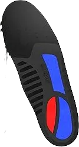
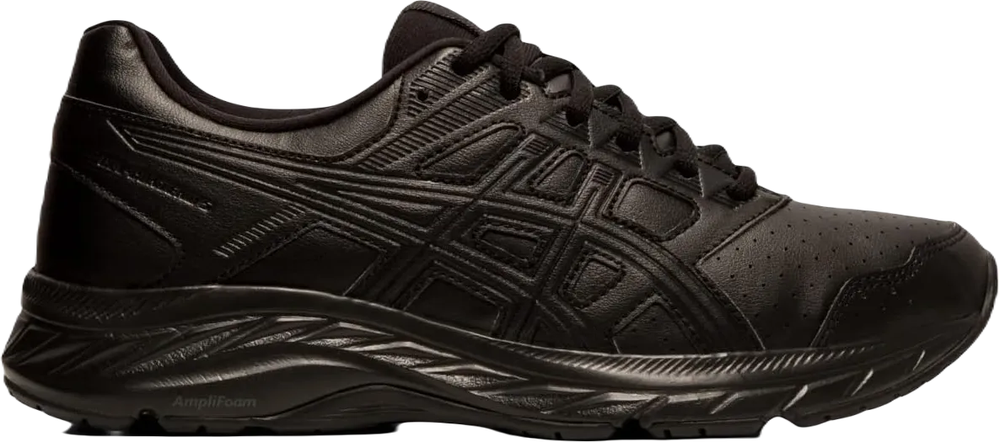
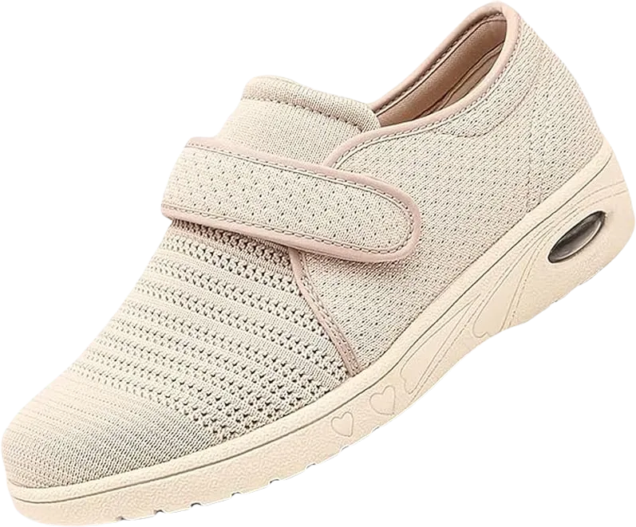

5 Best Sneakers for Lower Back & Pain Reduction 2024
Sneakers play a crucial role in our daily lives, influencing everything from physical well-being to social participation. They can enhance a person's overall personality, prevent injuries like hip pain, and provide support for working in challenging environments.
Today, we'll focus on the best shoes and sneakers designed specifically for alleviating back pain. It's important to note that many individuals experience back pain at least once during their lives, making it essential to find footwear that offers proper support and comfort.
-
#1
Adidas Ultra-boost 20
.webp)
The Ultra Boost is an innovative shoe sole technology introduced by Adidas, crafted from thousands of expanded particles that work in unison to deliver exceptional comfort, stability, and shock absorption. The Adidas Ultra Boost 20 boasts a sleek and stylish design, making it one of the most visually appealing shoes available. Not only are these shoes perfect for workouts, but they can also be worn casually, pairing effortlessly with sweatpants or jeans.
What sets this shoe apart? The Ultra Boost 20 features tailored fiber seams on its upper, which enhance stability and increase elasticity at the top. You'll notice these seams near the midsole as well, contributing to the overall design. Additionally, the upper is made from upcycled plastic waste sourced from beaches and coastal areas, making the Ultra Boost 20 an environmentally friendly choice while adding to its impressive features. -
#2
Saucony Guide ISO
.webp)
The Saucony Guide ISO is an award-winning stability shoe that has been a favorite for over a decade. Designed to deliver optimal comfort for both running and casual wear, the shoe’s innovative ISOFIT design adds a stylish touch to its functionality.
The shoe features a ribbed mesh upper with fused synthetic materials, enhancing breathability and support. Its midsole consists of an ISOFIT sleeve, ensuring a smooth and effective fit for the midfoot. Additionally, the EVA foam midsole offers flexibility, while the Everun topsole helps position the foot correctly, reducing the risk of injuries during running. The outsole incorporates soft blown rubber combined with hard carbon rubber under the rear foot, enhancing grip and making it suitable for both running and hiking activities.
The Saucony Guide ISO is particularly recommended for individuals experiencing back pain. The ISOFIT sleeve secures the foot in place, providing a snug fit that allows users to wear the shoe comfortably throughout the day. -
#3
Motion control back pain shoe
Motion control shoes are specifically designed to limit excessive foot movements by reducing the degree of pronation. These shoes are popular among individuals with back pain, who appreciate the stability and comfort they offer. Typically featuring a higher heel, motion control shoes help secure the foot and minimize the risk of injury.
One notable option in this category is the Skechers Shape Ups. Once hailed as some of the best shoes on the market, they have been updated and remain a favorite among walkers and hip replacement patients who value their comfort. Available in just three solid colors, these shoes exude a classic look and are particularly popular among the elderly.
Now, let’s explore the features of the Skechers Shape Ups. One of their standout attributes is the rocker sole design, which promotes a smooth, head-to-toe walking stride with a natural roll through each step. Additionally, these shoes provide exceptional comfort, and the wide toe box accommodates individuals with broader feet, ensuring a comfortable fit for everyone. -
#4
Cushioned Back pain walking shoe
Cushioned walking shoes are ideal for individuals suffering from back pain, as they are designed to minimize stress on the lower back. These shoes effectively secure the heel and feature a cushioned heel collar that supports the ankle, ensuring a proper fit. Many walking shoes also come with removable insoles, allowing you to dry them out or replace them during long walks or runs to help prevent foot infections caused by sweat.
Among the numerous brands that produce cushioned walking shoes, the Adidas Questar Flow stands out as one of the best on the market. Available in a wide array of stylish colors, these shoes can easily complement any outfit.
The upper layer is crafted from breathable mesh material, providing ventilation and comfort. Additionally, the heel cap is larger than that of standard shoes, enhancing comfort and securing the ankle to keep it cozy and stable throughout your activities. -
#5
Adjustable walking shoe
Adjustable walking shoes feature a classic design with two or three straps that allow for easy adjustment. These shoes are particularly popular among elderly individuals and those with back pain, as the straps provide a simple way to secure the shoe without the hassle of tying laces.
One notable option in the market is the New Balance 577 (Velcro Version), which is available in two colors: black and white. The outer layer is made from 100% water-resistant leather, ensuring durability and protection from the elements. Additionally, the sole offers strong traction, giving you confidence and stability while walking.
In terms of variety, the New Balance 577 comes in two styles: one with straps and another with laces. However, this review will focus on the strap version, which is particularly beneficial for individuals who need to change shoes frequently due to ankle issues. The leather exterior not only resists water but also repels dust, making these shoes a practical choice for daily wear.